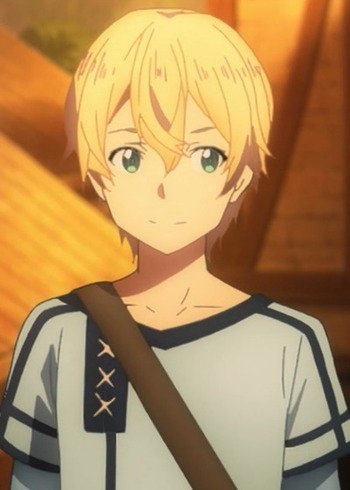
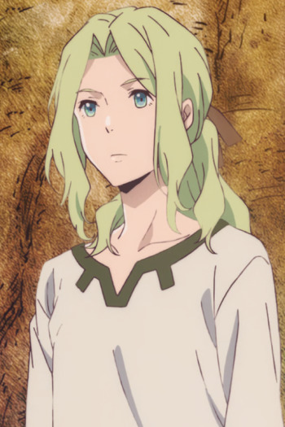

|  |
Eugeo |
- Sword Art Online: Alicization
- Sword Art Online: Alicization - Recollection
|
Eugeo is a wood cutter of Rulid Village. He is good friends with Kirito and Alice. Eugeo is a kind-hearted and considerate person who thought about others. He tried to maintain good relationship with his peers. He is a very compliant person. |
 |
Ritsuka Fujimura |
- Fate/Grand Order: First Order
- Fate/Grand Order: Himuro no Tenchi - 7-nin no Saikyou Ijin-hen
- Fate/Grand Order: Moonlight/Lostroom
|
Ritaka Fujimaru is one of the Mother candiates tasked to travel across time and correct several space-time anomalies in order to prevent humanity's extinction. He is the master of a Shielder class servant. |
|  |
Suou |
- Children of the Whales
- Children of the Whales Specials
|
Suou is one of the Unmarked that makes up 10% of the population and Sami's older brother. He is very kind and benevolent and treats everyone equally. He always sees the best in people and prefers to avoid violence. He is a patient, fair and reliable person. |